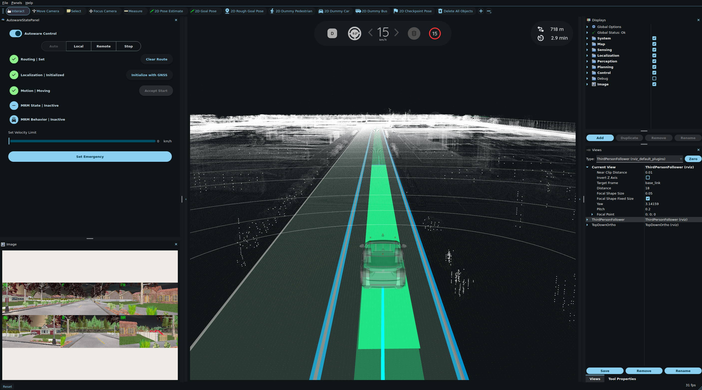

autoware_carla_interface#
ROS 2 / Autoware Universe bridge for CARLA simulator#
Thanks to https://github.com/gezp for ROS 2 Humble support for CARLA Communication. This ros package enables communication between Autoware and CARLA for autonomous driving simulation.
Supported Environment#
| ubuntu | ros | carla | autoware |
|---|---|---|---|
| 22.04 | humble | 0.9.15 | Main |
Setup#
Install#
Prerequisites#
-
Install CARLA 0.9.15: Follow the CARLA Installation Guide
-
Install CARLA Python Package: Install CARLA 0.9.15 ROS 2 Humble communication package
- Option A: Install the wheel using pip
- Option B: Add the egg file to your
PYTHONPATH
-
Download CARLA Lanelet2 Maps: Get the y-axis inverted maps from CARLA Autoware Contents
Map Setup#
- Download the maps (y-axis inverted version) to an arbitrary location
- Create the map folder structure in
$HOME/autoware_data/maps:- Rename
point_cloud/Town01.pcd→$HOME/autoware_data/maps/Town01/pointcloud_map.pcd - Rename
vector_maps/lanelet2/Town01.osm→$HOME/autoware_data/maps/Town01/lanelet2_map.osm
- Rename
-
Create
$HOME/autoware_data/maps/Town01/map_projector_info.yamlwith:projector_type: Local
Build#
colcon build --symlink-install --cmake-args -DCMAKE_BUILD_TYPE=Release
Run#
-
Run carla, change map, spawn object if you need
cd CARLA ./CarlaUE4.sh -prefernvidia -quality-level=Low -RenderOffScreen -
Run Autoware with CARLA
ros2 launch autoware_launch e2e_simulator.launch.xml \ map_path:=$HOME/autoware_data/maps/Town01 \ vehicle_model:=sample_vehicle \ sensor_model:=carla_sensor_kit \ simulator_type:=carlaFor E2E planning with VAD:
ros2 launch autoware_launch e2e_simulator.launch.xml \ map_path:=$HOME/autoware_data/maps/Town01 \ vehicle_model:=sample_vehicle \ sensor_model:=carla_sensor_kit \ simulator_type:=carla \ use_e2e_planning:=true -
Set initial pose (Init by GNSS)
- Set goal position
- Wait for planning
- Engage
Viewing Multi-Camera View in RViz#
The carla_sensor_kit includes 6 cameras providing 360-degree coverage (Front, Front-Left, Front-Right, Back, Back-Left, Back-Right). A multi-camera combiner node automatically combines all camera feeds into a single 2x3 grid view.
To view the combined camera feed in RViz:
- In the Displays panel (left side), click the "Add" button
- Select the "By topic" tab
- Navigate to
/sensing/camera/all_cameras/image_raw - Select "Image" display type
- Click OK

The combined view shows all 6 cameras with labels: FL (Front-Left), F (Front), FR (Front-Right), BL (Back-Left), B (Back), BR (Back-Right).
Note: If you don't need the multi-camera combiner (to save CPU resources), you can comment out the following line in launch/autoware_carla_interface.launch.xml:
<!-- Multi-camera combiner for RViz visualization -->
<!-- <node pkg="autoware_carla_interface" exec="multi_camera_combiner" output="screen"/> -->
Following the Ego Vehicle with the CARLA Spectator Camera#
The spectator_follow script locks the CARLA spectator (free) camera to the ego vehicle, so the in-simulator view chases the car automatically instead of having to pan manually. It connects to the running CARLA server, looks up the ego actor by its role_name, and updates the spectator transform at a fixed rate.
Run it in a separate terminal while CARLA and the Autoware bridge are running:
ros2 run autoware_carla_interface spectator_follow
Common options (all optional):
| Flag | Default | Description |
|---|---|---|
--host |
localhost |
CARLA server host |
--port |
2000 |
CARLA server RPC port |
--role |
ego_vehicle |
role_name attribute of the ego actor to follow |
--distance |
8.0 |
Meters behind the ego vehicle (use 0 for a top-down view) |
--height |
4.0 |
Meters above the ego vehicle |
--pitch |
-15.0 |
Camera pitch in degrees (negative looks down) |
--rate |
30.0 |
Update rate in Hz |
For a top-down view directly above the ego vehicle:
ros2 run autoware_carla_interface spectator_follow --distance 0 --height 30 --pitch -90
Press Ctrl+C to stop the script. It will keep retrying if the ego actor is not yet spawned, and re-acquire it if it is removed and respawned.
Inner-workings / Algorithms#
The InitializeInterface class is key to setting up both the CARLA world and the ego vehicle. It fetches configuration parameters through the autoware_carla_interface.launch.xml.
The main simulation loop runs within the carla_ros2_interface class. This loop ticks simulation time inside the CARLA simulator at fixed_delta_seconds time, where data is received and published as ROS 2 messages at frequencies defined in self.sensor_frequencies.
Ego vehicle commands from Autoware are processed through the autoware_raw_vehicle_cmd_converter, which calibrates these commands for CARLA. The calibrated commands are then fed directly into CARLA control via CarlaDataProvider.
Configurable Parameters for World Loading#
All the key parameters can be configured in autoware_carla_interface.launch.xml.
| Name | Type | Default Value | Description |
|---|---|---|---|
host |
string | "localhost" | Hostname for the CARLA server |
port |
int | "2000" | Port number for the CARLA server |
timeout |
int | 20 | Timeout for the CARLA client |
ego_vehicle_role_name |
string | "ego_vehicle" | Role name for the ego vehicle |
vehicle_type |
string | "vehicle.toyota.prius" | Blueprint ID of the vehicle to spawn. The Blueprint ID of vehicles can be found in CARLA Blueprint ID |
spawn_point |
string | None | Coordinates for spawning the ego vehicle (None is random). Format = [x, y, z, roll, pitch, yaw] |
sync_mode |
bool | True | Boolean flag to set synchronous mode in CARLA |
fixed_delta_seconds |
double | 0.05 | Time step for the simulation (related to client FPS) |
use_traffic_manager |
bool | False | Boolean flag to set traffic manager in CARLA |
max_real_delta_seconds |
double | 0.05 | Parameter to limit the simulation speed below fixed_delta_seconds |
tick_follower |
bool | False | If True, the bridge does not tick the CARLA world and instead follows the frames ticked by another client. See Multi-client co-simulation. |
carla_map |
string | "" | Explicit CARLA level name. When non-empty it overrides the name derived from map_path; useful for CARLA 0.10 levels whose name differs from the Autoware map directory. Empty reproduces the current behavior. |
no_rendering_mode |
bool | False | Disable CARLA scene rendering via world settings for headless/faster simulation. Applied unconditionally on world load, so the default False (re-)enables rendering even if the server was started headless; set True to keep rendering off. |
force_load_world |
bool | False | Always reload the world with client.load_world() instead of load_world_if_different(). Default False reproduces the current call (with a version-tolerant fallback). |
map_origin_x |
double | 0.0 | X offset from the CARLA world origin to the Autoware map frame origin, for levels authored with their own local origin. Default 0.0 is the identity (no change). |
map_origin_y |
double | 0.0 | Y offset from the CARLA world origin to the Autoware map frame origin. Default 0.0 is the identity (no change). |
spawn_point_ground_snap |
bool | False | Snap the ego spawn point and the RViz initial pose onto CARLA map geometry via ground_projection (see Ground snapping). Default False leaves the spawn point and the fixed z-offset unchanged. |
spawn_point_ground_offset_z |
double | 0.5 | Z offset added above the projected ground when ground-snapping the spawn point (only used when spawn_point_ground_snap is True). |
initial_pose_ground_offset_z |
double | 1.0 | Z offset added above the projected ground when ground-snapping the RViz initial pose (only used when spawn_point_ground_snap is True). |
sensor_kit_name |
string | "carla_sensor_kit_description" | Name of the sensor kit package to use for sensor configuration. Should be the *_description package containing config/sensor_kit_calibration.yaml |
use_light_weight_sensor_mapping |
bool | False | If True, uses sensor_mapping_light_weight.yaml instead of the default sensor_mapping.yaml to reduce simulator load. See Sensor Mapping (CARLA-specific) for details. |
sensor_mapping_file |
string | "$(find-pkg-share autoware_carla_interface)/config/sensor_mapping.yaml" | Path to sensor mapping YAML configuration file. When use_light_weight_sensor_mapping is True, this defaults to config/sensor_mapping_light_weight.yaml. |
publish_ground_truth_objects |
bool | False | If True, publishes every CARLA vehicle except the ego to /perception/object_recognition/detection/objects as ground truth detections, so tracking and prediction run on simulator truth instead of sensor based detection. Pedestrians are not covered. |
config_file |
string | "$(find-pkg-share autoware_carla_interface)/raw_vehicle_cmd_converter.param.yaml" | Control mapping file to be used in autoware_raw_vehicle_cmd_converter. Current control are calibrated based on vehicle.toyota.prius Blueprints ID in CARLA. Changing the vehicle type may need a recalibration. |
traffic_light.publish |
bool | False | Publish CARLA traffic-light states on /perception/traffic_light_recognition/traffic_signals as an autoware_perception_msgs/TrafficLightGroupArray. See Publishing CARLA Traffic-Light States. |
traffic_light.force_green |
bool | False | Set every CARLA traffic light to green and freeze it there at startup. Useful for camera-less closed-loop runs that have no traffic-light recognition and would otherwise hold at every signalized stop line. |
traffic_light.map_path |
string | "" | Path to the lanelet2 map (.osm). When set, CARLA traffic lights are matched to the map's traffic-light heads by position and published under the matched regulatory-element ids. Empty falls back to using the CARLA OpenDRIVE signal id directly as the group id. |
traffic_light.match_distance |
double | 5.0 | Maximum head-to-head distance (m) accepted when matching a CARLA traffic light to a lanelet2 head. |
traffic_light.match_ratio |
double | 0.6 | Ambiguity threshold: a match is rejected when the nearest head that resolves to a different signal is nearly as close as the winner (nearest > ratio * second). Lower is stricter. |
traffic_light.id_map |
string | "" | Optional override, formatted opendrive_id:group_id,..., that pins a CARLA signal id to one or more Autoware group ids and takes precedence over position matching. A single entry can list several group ids (separated with a vertical bar) to map a shared head to all its regulatory elements; use it to recover the few lights the matcher reports as ambiguous or unmatched. |
wake_sleeping_physics |
bool | False | Nudge the ego physics body awake with a small set_target_velocity when launching from standstill. Only needed on CARLA 0.10 (UE5/Chaos), where a stationary body is put to sleep and VehicleControl throttle does not wake it. Leave false on the supported 0.9.15 environment, whose bodies never sleep, to keep unmodified launch dynamics. |
These
traffic_light.*launch arguments are the node parameters of the same name, kept grouped together under thetraffic_light.namespace inros2 param list.
Ground snapping#
When spawn_point_ground_snap is enabled, the ego spawn point and the RViz "2D
Pose Estimate" initial pose are snapped onto the CARLA map geometry instead of
using a fixed z-offset. This helps on levels (e.g. some CARLA 0.10 maps) where
the map-frame z does not match the terrain, where a fixed offset can drop the
vehicle far above or below the road.
The ground height is obtained with world.ground_projection, casting a ray down
from z = 1000 m. Rather than probing only the target (x, y), a small
cross-shaped neighborhood is sampled and the highest ground hit is used:
sample offsets (dx, dy in meters)
(0, +1.5)
(0, +0.75)
(-1.5, 0) (-0.75, 0) (0, 0) (+0.75, 0) (+1.5, 0)
(0, -0.75)
(0, -1.5)
- Sampling a neighborhood (9 points) makes the result robust: a single ray can miss through a mesh gap or land in a gutter/curb seam and return a height below the road.
- Taking the maximum selects the road surface rather than a lower seam or gap, so the vehicle sits on top of the road instead of sinking into it.
On a CARLA API without ground_projection, snapping is skipped and the previous
fixed z-offset is used, so enabling the flag never raises. The spawn-point path
logs a warning when it falls back; the RViz initial-pose fallback is silent (and
with the default random spawn the spawn-point path is not exercised at all).
Multi-client co-simulation#
By default this bridge owns the CARLA simulation clock: its main loop calls world.tick() on every
cycle. A server in synchronous mode advances one frame per tick() call, so a second client that
also ticks, for example an external traffic simulator feeding background vehicles into the same
server, makes the simulation advance more than once per intended step.
Setting tick_follower to True puts the bridge in a passive mode. It no longer ticks the world in
its main loop, and instead publishes sensor data, the clock and the ego control for the frames that
the external client ticks. Exactly one client in the whole setup may own the clock.
Two things to keep in mind when using this mode:
- Start the bridge before the tick owner. Loading the world still ticks it a few times to bring up the ego vehicle and its sensors, and those ticks must not race the external owner.
- The cadence belongs to the tick owner, so
max_real_delta_secondsno longer paces the loop. Setfixed_delta_secondsto the step length that the owner uses. /clockstarts at zero on the first frame that the bridge processes. In this mode it stays a constant offset behind the CARLA elapsed time: the idle time before the owner started.
If the bridge cannot keep up with the incoming cadence it drops the frames it has fallen behind on and reports how many it skipped through a throttled warning.
Sensor Configuration#
The interface uses the carla_sensor_kit which provides 6 cameras for 360-degree coverage, LiDAR, IMU, and GNSS sensors. Sensor configurations are dynamically loaded from Autoware sensor kit calibration files through two configuration files:
1. Sensor Kit Calibration (from Autoware sensor kit)#
Located in <sensor_kit_name>_description/config/sensor_kit_calibration.yaml
Defines sensor positions and orientations relative to base_link (rear axle center). Example:
sensor_kit_base_link:
CAM_FRONT/camera_link:
x: 2.225
y: 0.000
z: 1.600
roll: 0.000
pitch: 0.000
yaw: 0.000 # Angles in radians
2. Sensor Mapping (CARLA-specific)#
Located in config/sensor_mapping.yaml
Maps Autoware sensors to CARLA sensor types and parameters. Key sections:
default_sensor_kit_name: Default sensor kit to use (e.g.,carla_sensor_kit_description)sensor_mappings: Maps each sensor to CARLA type and ROS topicsenabled_sensors: List of sensors to spawn in CARLAvehicle_config(optional): Vehicle parameters like wheelbase
Example sensor mapping:
sensor_mappings:
CAM_FRONT/camera_link:
carla_type: sensor.camera.rgb
id: CAM_FRONT
ros_config:
frame_id: CAM_FRONT/camera_optical_link
topic_image: /sensing/camera/CAM_FRONT/image_raw
topic_info: /sensing/camera/CAM_FRONT/camera_info
frequency_hz: 11
qos_profile: reliable
image_encoding: bgra8
parameters:
image_size_x: 1600
image_size_y: 900
fov: 70.0
image_encoding applies to cameras and accepts bgra8 (default, what CARLA
renders) or mono8. Publishing mono8 converts once in the bridge and sends a
quarter of the bytes, which is worth it when every consumer of that camera
works on luminance alone, such as feature tracking or visual odometry. A
1600x900 frame is 5,760,000 bytes as bgra8 and 1,440,000 bytes as mono8.
For CARLA sensor parameters, see CARLA Sensor Reference.
Sensor Noise#
The IMU and GNSS are spawned noise-free unless the mapping says otherwise, which is what reproducing a run wants. It also means anything consuming those sensors sees a measurement no hardware produces: a localization or odometry stack scored against a perfect gyro reports an accuracy it will not reach on a vehicle.
Set any of the CARLA noise attributes under the sensor's parameters to get a
sensor that behaves like hardware:
sensor_mappings:
imu_link:
carla_type: sensor.other.imu
id: imu
ros_config:
frame_id: tamagawa/imu_link
topic: /sensing/imu/imu_data
frequency_hz: 50
parameters:
noise_gyro_stddev_x: 0.001
noise_gyro_stddev_y: 0.001
noise_gyro_stddev_z: 0.001
noise_gyro_bias_x: 0.0005
noise_accel_stddev_x: 0.01
Recognized names are noise_accel_stddev_{x,y,z}, noise_gyro_stddev_{x,y,z}
and noise_gyro_bias_{x,y,z} for the IMU, and noise_{alt,lat,lon}_stddev and
noise_{alt,lat,lon}_bias for the GNSS. Anything left out stays at zero.
Light-Weight Sensor Mapping#
For machines with limited GPU/CPU resources, an alternative config/sensor_mapping_light_weight.yaml is provided to reduce simulator load. Compared to the default mapping, it:
- Uses a single front camera (
CAM_FRONT) instead of the 6-camera 360-degree setup, with a wider FOV (120°) and lower resolution (1080x720) to roughly cover the area in front of the vehicle. - Lowers sensor frequencies (e.g., LiDAR/camera at 10 Hz instead of 11 Hz).
- Keeps the same LiDAR, IMU, and GNSS configuration as the default mapping.
When enabled via use_light_weight_sensor_mapping:=True, the launch file also skips the image_transport republish nodes for the disabled cameras and the multi_camera_combiner node automatically.
Example usage:
ros2 launch autoware_launch e2e_simulator.launch.xml \
map_path:=$HOME/autoware_map/Town01 \
vehicle_model:=sample_vehicle \
sensor_model:=carla_sensor_kit \
simulator_type:=carla \
use_light_weight_sensor_mapping:=True
Note that with this configuration, features that depend on the surround cameras (such as the multi-camera RViz view) are unavailable.
World Loading#
The carla_ros.py sets up the CARLA world:
-
Client Connection:
client = carla.Client(self.local_host, self.port) client.set_timeout(self.timeout) -
Load the Map:
Map loaded in CARLA world with map according to
carla_mapparameter.client.load_world(self.map_name) self.world = client.get_world()After loading, the interface checks that the map CARLA is actually running is the one that was requested. If it is not - the level does not exist, the server failed to switch, or the connection dropped - the mismatch is logged to
rosoutand the node aborts withCarlaWorldLoadError. Running Autoware against a map the simulator is not simulating would silently invalidate the whole run, so it is treated as fatal rather than tolerated. -
Spawn Ego Vehicle:
Vehicle are spawn according to
vehicle_type,spawn_point, andagent_role_nameparameter.spawn_point = carla.Transform() point_items = self.spawn_point.split(",") if len(point_items) == 6: spawn_point.location.x = float(point_items[0]) spawn_point.location.y = float(point_items[1]) spawn_point.location.z = float(point_items[2]) + 2 spawn_point.rotation.roll = float(point_items[3]) spawn_point.rotation.pitch = float(point_items[4]) spawn_point.rotation.yaw = float(point_items[5]) CarlaDataProvider.request_new_actor(self.vehicle_type, spawn_point, self.agent_role_name)
Traffic Light Recognition#
The maps provided by the Carla Simulator (Carla Lanelet2 Maps) currently lack proper traffic light components for Autoware and have different latitude and longitude coordinates compared to the pointcloud map. To enable traffic light recognition, follow the steps below to modify the maps.
-
Options to Modify the Map
- A. Create a New Map from Scratch
- Use the TIER IV Vector Map Builder to create a new map.
- B. Modify the Existing Carla Lanelet2 Maps
- Adjust the longitude and latitude of the Carla Lanelet2 Maps to align with the PCD (origin).
- Use this tool to modify the coordinates.
- Snap Lanelet with PCD and add the traffic lights using the TIER IV Vector Map Builder.
- When using the TIER IV Vector Map Builder, you must convert the PCD format from
binary_compressedtoascii. You can usepcl_toolsfor this conversion. - For reference, an example of Town01 with added traffic lights at one intersection can be downloaded here.
Publishing CARLA Traffic-Light States#
Instead of running camera-based recognition, the bridge can publish the CARLA server's
traffic-light states directly. Setting traffic_light.publish:=true publishes an
autoware_perception_msgs/TrafficLightGroupArray on
/perception/traffic_light_recognition/traffic_signals every tick. Each CARLA light is
reported as a circular signal whose color and status follow the CARLA state: Red/Yellow/Green
map to RED/AMBER/GREEN with status SOLID_ON, the known-dark Off state maps to status
SOLID_OFF, and only a state the bridge cannot interpret is published as UNKNOWN/UNKNOWN.
Autoware keys traffic signals by traffic_light_group_id, the id of a traffic_light
regulatory element in the lanelet2 map. The bridge resolves which group(s) each CARLA light
belongs to as follows, in order of precedence:
traffic_light.id_mapoverride. If the light's OpenDRIVE signal id appears in theopendrive_id:group_id[|group_id...],...map, those group ids are used directly. One entry may pin several group ids (|-separated), so a shared physical head can be mapped to every regulatory element that governs it. A malformed entry (no:, a non-integer id, or no group id after the:) is skipped with a warning naming the offending entry, so a typo neither stops the bridge nor silently overrides a light with an empty group list; the remaining entries still apply.- Position matching (
traffic_light.map_path). When a lanelet2 map is given, each CARLA light head is matched to the nearest map traffic-light head, and its state is published under every regulatory element that references that head (one physical light is commonly shared by several regulatory elements, one per approaching lane). This needs no id convention between CARLA and the map — it works for hand-authored / Vector Map Builder maps whose regulatory-element ids do not correspond to the OpenDRIVE signal ids. - OpenDRIVE-id fallback. With no map path and no override, the OpenDRIVE signal id is used directly as the group id (correct only for maps generated so regulatory-element ids preserve the OpenDRIVE signal ids).
Position matching is deliberately conservative: it binds a CARLA light only when a single map head
is clearly closest. If a head belonging to a different signal is nearly as close (the classic
"light across the intersection" case, controlled by traffic_light.match_ratio), is exactly as
close (a tie has no winner, so the .osm order must not decide it), or nothing is within
traffic_light.match_distance, the light is left unpublished and logged as ambiguous / unmatched
rather than guessed. Watch the node's startup log for the match report (N matched, M ambiguous,
K too far) and pin any reported light through traffic_light.id_map if you need it.
Position matching reads the lanelet2 node
local_x/local_ytags, i.e. the Autoware map frame, and expresses each CARLA head in that frame viamap_origin_x/map_origin_y(the same offsets used for localization). If localization is aligned, matching is too.
To let the ego proceed through all intersections without any recognition setup — for example in
camera-less closed-loop runs — set traffic_light.force_green:=true. At startup this sets every
CARLA traffic light to green and freezes it; combined with traffic_light.publish:=true the
frozen green states are also published on the topic above.
Tips#
- Misalignment might occurs during initialization, pressing
init by gnssbutton should fix it. - Changing the
fixed_delta_secondscan increase the simulation tick (default 0.05 s), some sensor params insensor_mapping.yamlneed to be adjusted when it is changed (example: LIDAR rotation frequency should match the FPS).
Known Issues and Future Works#
- Testing on procedural maps (Adv Digital Twin): Currently unable to test due to failures in creating the Adv Digital Twin map.
- Traffic light recognition: The default CARLA Lanelet2 maps lack proper traffic light regulatory elements. See the "Traffic Light Recognition" section above for workarounds, or bypass camera recognition entirely with
traffic_light.publish(see "Publishing CARLA Traffic-Light States").